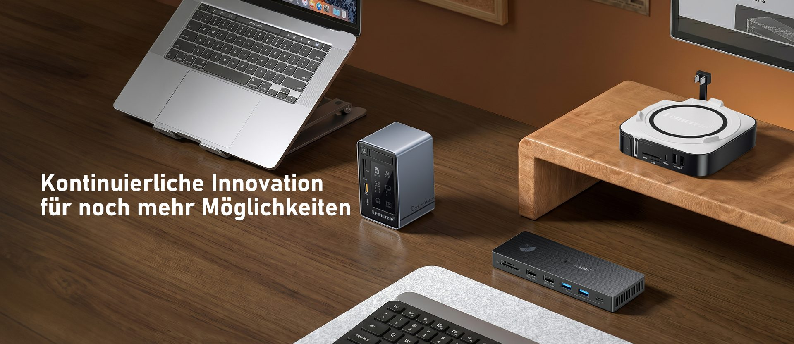
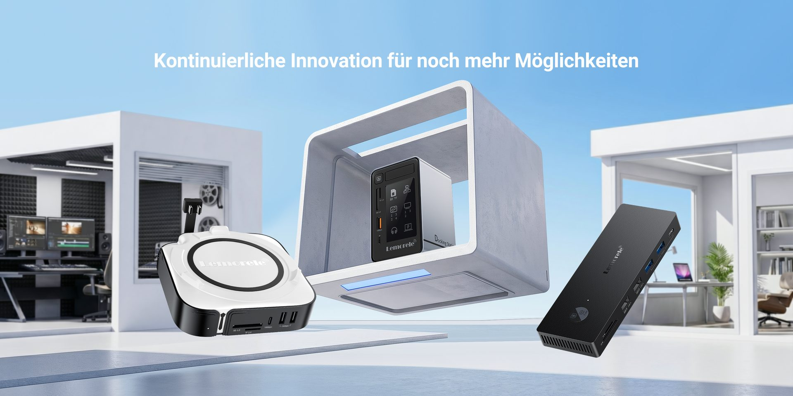

BRAND CONTENT
A+ 详情页
10 MODULES · 2.44:1

拓展坞产品视觉系列
从亚马逊主副图、场景 Banner 到 A+ 详情页，以清晰的信息层级和统一的系列语言，构建完整的 3C 产品视觉链路。
AMAZON LISTING · FLAGSHIP MODEL
场景视觉
将接口数量、传输规格与桌面连接关系拆成连续画面，让功能信息清晰、真实且易于比较。

LISTING SYSTEM
主副图 × A+
以核心接口、传输效率和真实桌面场景为主线，让用户在短时间内理解产品价值。
10 MODULES · 2.44:1
KEY VISUAL · FUNCTION STORY
场景视觉
以办公设备组合、产品结构特写和克制的参数语言，强化稳定连接与高效扩展的使用价值。
LISTING SYSTEM
主副图 × A+
通过产品结构特写与办公设备组合，强化专业、高效、可靠的中高端定位。
10 MODULES · 2.44:1

PREMIUM SERIES · DESKTOP SCENE
场景视觉
减少无效装饰，把注意力集中在金属质感、接口细节与专业桌面氛围，形成更成熟的视觉语气。
LISTING SYSTEM
主副图 × A+
用克制的场景、材质细节与统一光影，建立更适合高客单产品的视觉信任感。
10 MODULES · 2.44:1
SERIES EXTENSION · PRODUCT ECOSYSTEM
场景视觉
通过一致的构图逻辑、信息层级和色彩控制，让系列扩展时仍然保持清楚、统一且具有辨识度。
LISTING SYSTEM
主副图 × A+
在同一视觉体系内覆盖更多产品形态，让不同型号保持清晰区分，也维持统一的品牌识别。
10 MODULES · 2.44:1
从旗舰型号到系列延展，每个案例都完整呈现场景 Banner、主副图与 A+ 详情，并保留独立的图片上传和文字编辑入口。